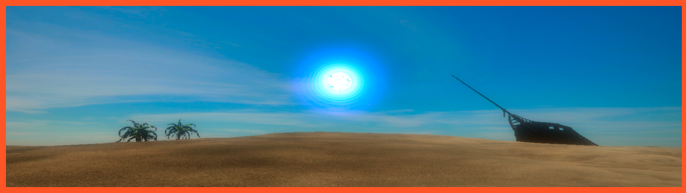

VR Desert Showcase
Podríamos llamar a esta la "primera fase" del proyecto mencionado en Duck Game.
En él, simplemente tenemos una primera aproximación tanto al software como al hardware proporcionado por Oculus y sus SDK's para Unity.
En este "ShowCase" tenemos las interacciones básicas como coger objetos, coger objetos a distancia, utilización de los botones de los controladores y demás.
Cabe destacar la interacción con los objetos, en concreto el hecho de que los objetos se rompen dependiendo de la fuerza con la que se golpeen, al igual que los enemigos que reciben un daño proporcional a la fuerza con la que son golpeados.
Dada la embergadura que en un primer momento tuvo este proyecto, también fue utilizado para la asignatura de Sonido para videojuegos, aplicando a este todos los sonidos mediante FMOD Studio y aprovechando el HRTF proporcionado por Oculus para el sonido espacial.
Imágenes del juego


¿Cómo instalarlo?
Al ser exclusivo para las gafas de Realidad Virtual Oculus Rift S, no he considerado la necesidad de subir el ejecutable y al ser un simple "Showcase interno" para hacer pruebas y prototipos en una primera fase de desarrollo no tiene la jugabilidad necesaria para ser probado.